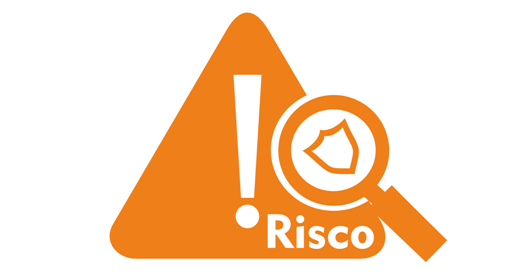

A gestão de risco é o conjunto de atividades coordenadas que têm o objetivo de
gerenciar e controlar uma organização em relação a potenciais ameaças, seja qual for a sua
manifestação.
A vulnerabilidade existe mesmo que o produto ou serviço oferecido seja diferenciado, a marca seja forte
e o planejamento exemplar.
É uma estratégia que envolve um trabalho preventivo de se antecipar a possíveis situações e considerar a
prática como parte dos processos da empresa.
Mas inclui também atuar de maneira prescritiva, isto é, quando o risco se manifesta sem ter sido
previsto.
Nesse caso, a gestão de risco busca estimular na empresa um comportamento dinâmico, para que ela
responda com rapidez aos eventos, incertezas e mudanças de cenário.

Cobit Framework
COBIT é um framework de governança corporativa de TI e possui um vasto repertório de
processos, indicadores e ferramentas que podem alavancar os níveis de capacidade dos processos de TI e
de negócio da sua organização. Utilizando técnicas de implementação de modelos de governança e
gerenciamento de processos de forma eficaz e alinhada com os objetivos estratégicos do negócio.
O Control Objectives for Information and related Technology (COBIT® ) fornece boas práticas através de
um modelo de domínios e processos e apresenta atividades em uma estrutura lógica e gerenciável. Essas
práticas irão ajudar a otimizar os processo em TI, assegurar a entrega dos serviços e prover métricas
para avaliar o nível de maturidade de acordo com os conceitos descritos pelo framework. Descubra mais sobre o COBIT
Métodos de avaliação
O método de avaliação tem base na escala padrão da ISO/IEC 15504 que consiste em:
a) N (Não alcançado) – Há pouca ou nenhuma evidência de que os atributos definidos são alcançados no
processo avaliado. Considera-se que entre 0 e 15% dos quesitos são atendidos.
b) P (Parcialmente alcançado) – Há alguma evidência do cumprimento dos atributos definidos no processo
avaliado. Alguns aspectos podem ser imprevisíveis. Considera-se que entre 15% e 50% dos quesitos são
atendidos.
c) L (Amplamente – Largely – alcançado) – Há evidência de uma abordagem sistemática, com o alcance
significativo dos atributos definidos no processo avaliado. Algumas falhas relacionadas aos atributos
podem existir. Considera-se que entre 50% e 89% dos quesitos são atendidos.
d) F (Completamente – Fully – alcançado) – Há evidência de uma abordagem sistemática completa, assim
como o alcance completo dos atributos definidos para o processo avaliado. Não existe falha significante
relativa aos atributos. Considera-se que mais de 85% dos quesitos são atendidos.
Nosso questionário é composto por um total de 140 perguntas detalhadas agrupadas por tópicos, onde cada
tópico se refere a um ponto crucial para a análise de risco, pontos como: áreas específicas da empresa,
políticas e documentações utilizadas ou gestões específicas adotadas ou não pela organização.